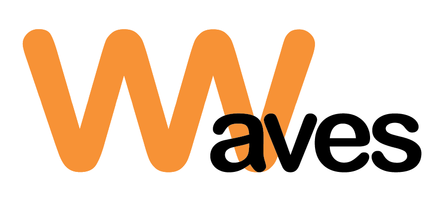

- Waves Lanka:

Waves has become Sri Lanka’s leading eco-friendly flip flops manufacturer. The company has expanded into a very large organization branching to the United Kingdom. Their flip flops are made out of 100% locally sourced rubber.
They are known for their high quality standards and comfortability. In addition, the company is very conscious about the environment and has done a successful job in incorporating the Ceylon culture and essence into their products.
- Eco Maximus:
Eco Maximus was founded in 1997, with the company basing off their idea around Elephant dung and other waste matter paper. Starting off with 7 employees the company has expanded into having nearly 200 employees by 2009.
They have received worldwide recognition for the idea of using elephant waste for paper, making them one of the most reputable businesses in Sri Lanka.

- Eco Kadé:
Eco Kadé was founded in 2018 by a couple named Munsif and Saara. The couple were inspired by the useage of bamboo for straws and other wares in Bali, they decided to start their own business in Sri Lanka. It is a small, eco conscious, ethical business slowly expanding into one of Sri Lanka’s more reputed businesses.
All of Eco Kadé’s products are locally sourced and mainly based around the usage of local bamboo. They also use the business as a means of raising awareness about the impact of plastic on the environment, and influence people to switch to eco friendly products